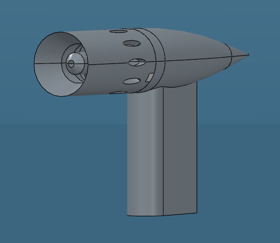
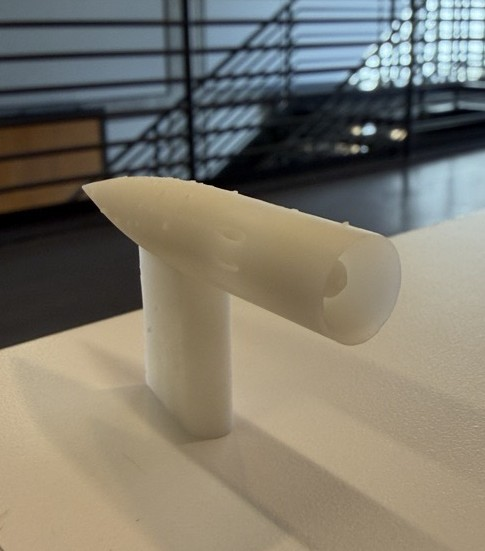

Kiel Probe Design & Integration (In Progress)
Hytech Racing (FSAE EV)


Overview
- Led the design, simulation, prototyping, and wind tunnel test integration of Kiel probes for Hytech Racing
- A Kiel probe uses a shroud to straighten incoming airflow, making it less sensitive to flow angle than a standard pitot probe
- Will measure total pressure on the car (one sensor for speed), but is mainly intended for wind tunnel testing and aero rake testing
Key Results
- Modified probe geometry and validated it in Ansys Fluent: yaw-insensitive up to 40 deg
- Designing and building a mount for Georgia Tech's low turbulence wind tunnel (LTWT) to validate the probe experimentally
- Prototyped probes with resin 3D printing and identified surface finish and small-channel tolerances as the key manufacturing risks
Next Steps
- Wind tunnel validation of the probe in the LTWT
- Redesign the probe to screw onto an aero rake-incorporated mount
My Role
Probe Modifications
- Started from an open-source Kiel probe CAD model and reworked the internal channel from a T-junction to a bent corner
- Added fillets to the outer body
- Designing a screw-on version of the probe to mount to the aero rake
Simulation & Validation
- Ran Ansys Fluent simulations of the modified geometry across yaw angles
- Confirmed yaw-insensitive total pressure readings up to 40 deg
Manufacturing
- Resin 3D printed prototype probes, passing air through the internal channel before curing to keep it clear
- Found surface bumps on the first prototypes that require sanding
- Monitoring tolerances and potential defects in the 1.2 mm ID internal channel
Wind Tunnel Test Setup & Integration
- Designing and building a mount to hold the probe in the LTWT
- Integrating tubing and a pressure sensor into the mount
- Interfacing the mount with the tunnel's built-in mounting plate
Skills
Ansys Fluent
CAD Modeling
Aerodynamic Validation
Wind Tunnel Testing